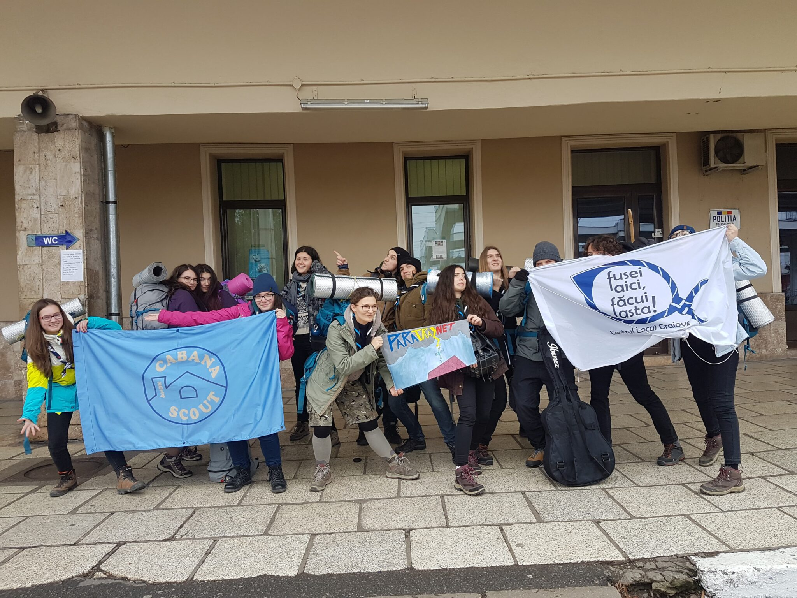

Primul meu eveniment cercetășesc

Claudia este unul dintre cei doi cercetași de la Cabana Scout care au reprezentat centrul nostru local la Campul Național „100 de ani de cercetășie în România Unită” organizat de CL Licos Timișoara. Am vrut să aflăm de la ea cum a fost această experiență. Și iată ce ne-a împărtășit:
Primu’ eveniment? Apăi o fost fain, nici n-am realizat că s-o terminat încă, şi n-am de gând să procesez asta prea curând.
Joi: Ne lipiserăm la omuleții din Craiova şi până a ajuns trenu’la ei am ațipit un pic. Scrio a adormit după ce mi-a băut cafeaua, eu am adormit după ce mi-a băut ea cafeaua…dar nu pentru mult pentru că s-o lipit şi Craiova la noi după vreo 3 ore. Am făcut cunoştință, am cântat Country Roads, am făcut pacturi, ne-au hrănit, am aflat că avem „-7 ani de acasă” de la o controloare dulce ca mierea. Nu e bonding time ca statu’3 pe 2 scaune, serios. Până să ajungem ne adoptaseră deja de tot.
Aşa, am ajuns la Timişoara. Am umplut un autobuz şi am ajuns şi la sala de sport. Ne-am aranjat sacii de dormit şi am jucat jocuri ce implicau fugăritul celorlalți. După multele ore pe tren ne-a prins foarte bine treaba asta pentru că uitarăm de somn. Legătura noastră cu CL Craiova se materializează prin steagul lor prins de un coş de baschet şi al nostru prins cu ace de siguranţă de primul. La deschiderea evenimentului ne-au ajutat cu strigătul de centru… ceea ce n-a fost niciun pic dubios…
Vineri: Ne-am trezit, am mâncat, am mers în pădure să ne jucăm de-a polițaii şi hoții. Seara fiecare si-o făcut stand al centrului: am furat câte un abțibild de la alții şi ei de la noi.
Sâmbătă: După un energizer corect de „mango” am luat autobuzul spre atelierele zilei. Orientarea profesională mi-a confirmat calea în viată (ms) şi am râs ca o nebună la cel de Teatru Şi Improvizație (ms şi aici). Se formă apoi patrula DELTA si strigătul său „b^2-4ac”. Patrula delta a mers într-un hike urban pentru următoarele 6 ore în care nu prea ştiu ce s-a întâmplat după Aleea fără nume şi statul pe banca dubioasă din mijlocul ei, dar ne-am distrat… cred.
Duminică: Ne-am apucat să plângem….adică să ne luăm rămas bun…prin lacrimi…nu-s multe de spus despre asta. Era să pierdem trenu’dar luasem pizza înainte de asta deci o fost totu’ok. Pe tren tensiunea despărțirii ne-o băutut ceva şi măcar o oră am tot stat să ne îmbrățişăm. Cu Craiova plecată nu prea mai aveam ce face aşa că Scrio mi-a băut cafeaua şi a adormit, după am adormit şi eu. Până la Bucureşti am încercat să realizăm că s-o terminat aventura noastră la Timişoara. Eu n-am reuşit nici până acum, sincer.
Claudia Bozga